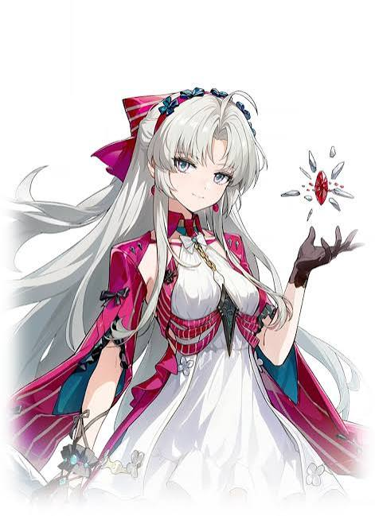
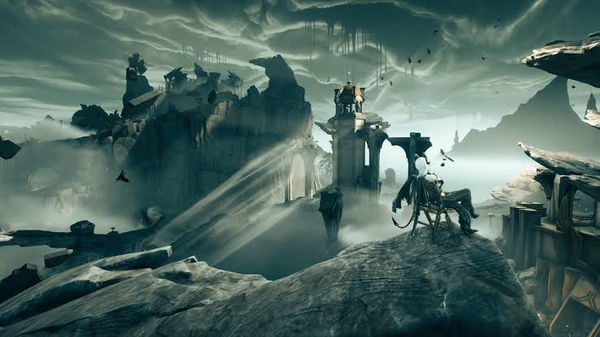
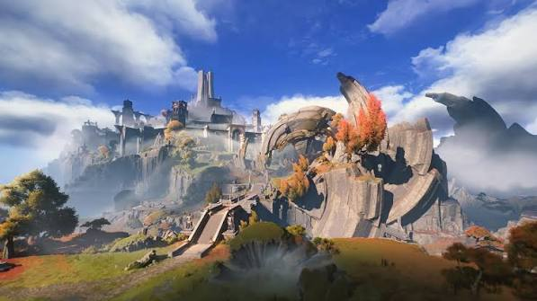
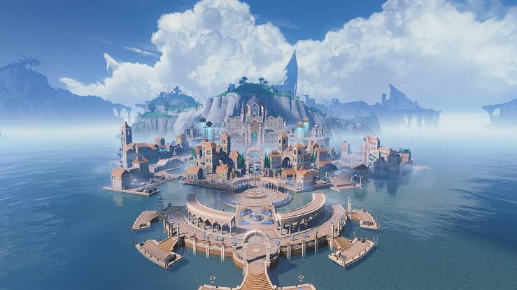
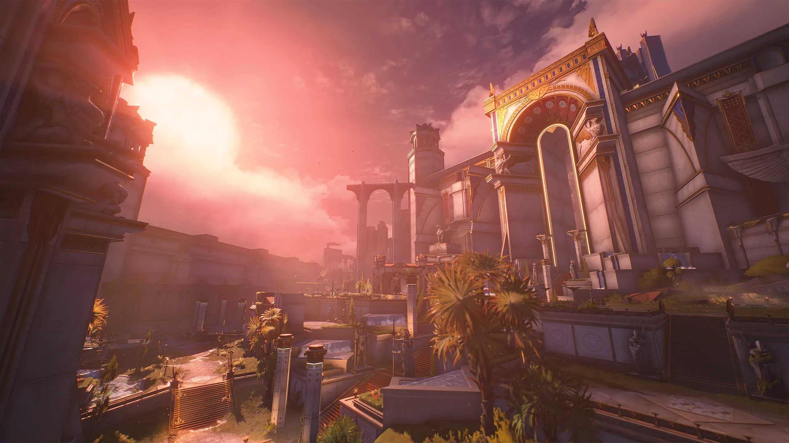

RESONATOR FROM RINASCITA


| REGION IN SEPTIMONT | PLACE DESCRIPTION | NPCs |
|---|---|---|
| Mournfell Canyon
 |
Teensy Weensy | Pegunungan yang menjadi batas alami Septimont dengan wilayah luar. Area ini terkena dampak besar dari Dark Tide pertama dan masih memiliki bekas Tidal Blight calcification. |
| Titanbone Expanse
 |
Lucilla | Wilayah dataran luas yang dikelilingi pegunungan. Di sinilah peradaban awal Septimont disebut mulai berkembang, dan sekarang masih terdapat desa-desa tua serta arena kecil. |
| REGION | CHARACTER | INFORMATION |
|---|---|---|
| SEPTIMONT |
Augusta
|
Ephor of Septimont, pemimpin tertinggi Septimont. |
| iuno | Priestess of Tetragon Temple | |
| RAGUNNA |
Carlotta
 |
Putri kedua keluarga Montelli dan salah satu tokoh penting dalam politik serta bisnis Ragunna. |
| phoebe | Acolyte, dan memiliki posisi yang semakin penting dalam Order of the Deep. |
| REGION IN RINASCITA | INFORMATION | ||
|---|---|---|---|
| DESCRIPTION | CIRI KHAS | ||
| RAGUNNA
 |
Ragunna adalah kota-negara di bagian selatan Rinascita yang terkenal sebagai kota pelabuhan yang makmur. Kota ini memiliki kanal-kanal air, bangunan bergaya Eropa, gondola, serta suasana yang sangat kental dengan seni dan budaya | 🎭 seni • 🌊 kanal & laut • 🏛️ arsitektur Eropa • ⛪ kepercayaan kepada Sentinel | |
| SEPTIMONT
 |
Septimont adalah kota-negara lain di Rinascita yang memiliki karakter jauh lebih militeristik dan berorientasi pada kejayaan dibandingkan Ragunna. Masyarakatnya tidak menyembah Divinity seperti orang-orang Ragunna, melainkan memberikan penghormatan kepada para pahlawan manusia. | ⚔️ gladiator • 🏛️ nuansa Romawi/klasik • 🏆 kejayaan • 🔥 kompetisi | |